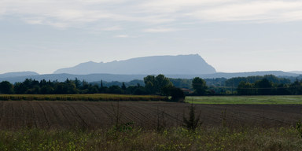
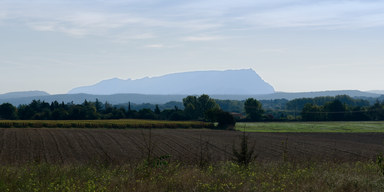

Signature · 100%Sony A1 · A1M01739 · ISO 100 · 1/4000 · f/2.8
Signature · 100%Sony A1 · A1M01739 · ISO 100 · 1/4000 · f/2.8Provence
2026-10-04 · 7 photosSignature · 100%Sony A1 · A1M01739 · ISO 100 · 1/4000 · f/2.8Input
Main
01
Skin

02
Sky

03
Parallel
Output
100%
Signature · 100%Sony A1 · A1M01739 · ISO 100 · 1/4000 · f/2.8
